[ROT_8] Rotation switch with 8 outputs
Function block ROT_8 switches on or off up to 8 plant components according to the runtime or defined sequence.
ROT_8 switches on or off up to eight plant components according to a defined sequence or based on operating hours. Switching occurs according to the number of requested plant components, their runtime, pending error messages or based on an external signal.
The value on input [SpNrFun] defines the number of plant components to be switched on. For example, 4 if four boilers are required to cover heat demand. As a result, four outputs are needed for plant component control.
Plant components are also switched on or off for an increasing or decreasing value at input [SpNrFun].
ROT_8 determines the outputs [Cmd1]...[Cmd8] for use based on the settings and runtimes from plant components.
The operating hours can be counted internally based on the duration of the active output signals [Cmd1]...[Cmd8] or the plant component feedback [OpSta1]...[OpSta8]. As an alternative, the operating hours can be transmitted by an external operating hours counter to inputs [ValExtOph1]...[ValExtOph8].
If a plant component signals a fault, it is switched off and switched on according to the new plant component.
Switching on and off
Plant components are commanded according to the requested value at input [SpNrFun].
Plant components that cannot be switched, but are operational ([Avl1]...[Avl8] = 0 and [OpSta1]...[OpSta8] = 1 are considered operational and added to the calculation of the number of required plant components.
The switching criterion is selected on input [NxRotMod].
Time-based
In time-based mode, plant components are commanded based on present operating hours.
- On switch on, the plant component with the lowest operating hours is switched on.
- On switch off, the plant component with the most operating hours is switched off.
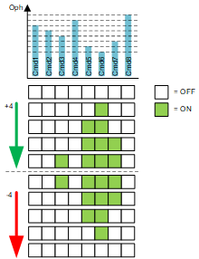
Oph = Operating hours
Time-based with overlap
"Time-based with overlap" uses the same logic as "Time-based".
Stopping a plant component is delayed, however, by [TiOvrlp].
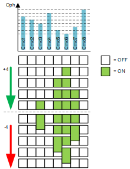
Oph = Operating hours
Time-based with interruption
"Time-based with overlap" uses the same logic as "Time-based",
Starting a plant component is delayed, however, by [TiOvrlp].
Oph = Operating hours
Last in first out
'Last In First Out' switches on the plant components in ascending order and switches them off in descending order. In other words, the first switched on plant component is the last to be switched off.
Input [BlFun] defines the starting point of the switch-on sequence.
Example:
If the plant component on output [Cmd7] is selected as the starting point, the switch-on sequence for the four requested plant components on eight available plant components is as follows:
[Cmd7], [Cmd8], [Cmd1], [Cmd2]
The disable sequence is the reverse:
[Cmd2], [Cmd1], [Cmd8], [Cmd7]
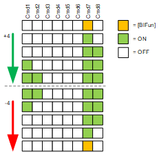
[BlFun] = Starting point for the switching sequence
First in first out with overlap
"Last in first out with overlap" uses the same logic as "Last in first out".
Stopping a plant component is delayed, however, by [TiOvrlp].
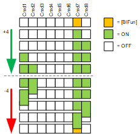
[BlFun] = Starting point for the switching sequence
First in first out with interruption
"Last in first out with overlap" uses the same logic as "Last in first out".
Starting a plant component is delayed, however, by [TiOvrlp].
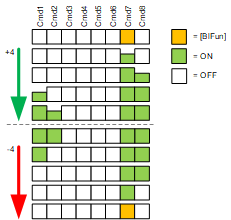
[BlFun] = Starting point for the switching sequence
First in first out
'First In First Out' switches on and off plant components in a circular sequence. In other words, the first switched on plant component is also the first to be switched off.
Example:
Switch-on sequence for four requested plant components on eight available plant components:
[Cmd1], [Cmd2], [Cmd3], [Cmd4]
Switch-off sequence:
[Cmd1], [Cmd2], [Cmd3], [Cmd4]
The starting point of the switching sequence is defined by an internal pointer.
If a plant component is switched off, the pointer moves to the next one.
If the pointer points to a plant component that cannot be switched, it moves to the next one.
If the plant component is switched on, the pointer stands still.
The indicator is on Cmd5 after the 4 plant components are switched on and off.
If switched on again, the switch-on sequence starts at Cmd5, since the internal indicator is at this position after the first switch-off sequence.
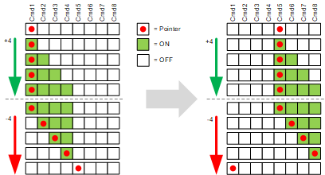
First in first out with overlap
"First in first out with overlap" uses the same logic as "First in first out".
Stopping a plant component is delayed, however, by [TiOvrlp].
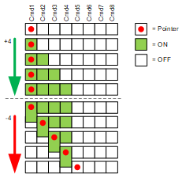
First in first out with interruption
"First in first out with interrupt" uses the same logic as "First in first out".
Starting a plant component is delayed, however, by [TiOvrlp].
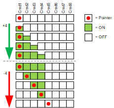
Changeover by operating hours
Outputs can be automatically changed over during operation by their operating hours. Changeover with [EnNxRot] = 1 must be permitted. Otherwise, it is only changed over for a fault or if a plant component is no longer available.
Automatic changeover is only possible for time-based rotation types (input [NxRotMod] with settings "Time-based", "Time-based with overlap", and "Time-based with interrupt").
The plant component is switched off as soon as it reaches the maximum runtime [TiRnMax] and the unswitched plant component with the lowest operating hours is switched on.
Only plant components that can be switched (input [Avl1…Avl8] = 1 and input [Dstb1…Dstb8] = 0) are changed over.
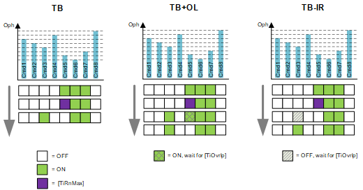
TB = Time-based changeover
TB+OL= Time-based changeover with overlap
TB-IR = Time-based changeover with interruption
[TiRnMax] = Plant component with max. runtime reached
Changeover by external command
Outputs can be switched during operation by an external signal. Changeover with [EnNxRot] = 1 must be permitted. Otherwise, it is only changed over for a fault or if a plant component is no longer available.
Forced rotation is triggered as soon as an external command is pending (rising edge) at input [FrcNxRot].
For a time-based changeover, the active plant component with the most operating hours is switched off; the plant component with the fewest operating hours is switched off.
The first switched-on output is switched off for FIFO and the next output is switched on per the switching sequence.
Forced rotation is not supported for LIFO.
Only plant components that can be switched (input [Avl1…Avl8] = 1 and input [Dstb1…Dstb8] = 0) are changed over.
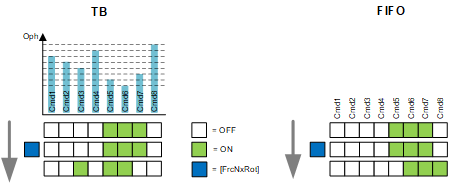
TB = Time-based changeover
FIFO = First in first out
[FrcNxRot] = Receipt of the external changeover command
Changeover for faults
If a plant component reports a fault ([Dstb1]...[Dstb8] = 1) , it is switched off and another plant components takes it place according to the switched sequence.
For time-based changeover, this is the plant component with the fewest operating hours.
The next plant component from the switching sequence is used for LIFO and FIFO.
If the fault is resolved, the response is based on the selected switching criterion:
- For time-based changeover and FIFO, the plant component remains switched off. It is considered, however, at the next regular switching process.
- For LIFO, the plant component is switched on again, as long as it is still within the plant component to be activated. The last plant component that was switched on is switched off again.
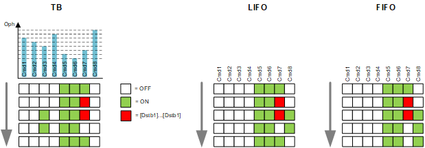
TB = Time-based changeover
FIFO = First in first out
LIFO = Last In First Out
[Dstb1]...[Dstb8] = Fault at one of the outputs [Cmd1]...[Cmd8]

In a time-based mode, when plant components are switched upon reaching the maximum runtime, the same operating hours may not always be attainable (an operating component is requested if only two are available). In these cases, [PrfrMod] can define the switching preference for maximum runtime or equal operating hours.
Input | Description | Data type | Default value |
|---|---|---|---|
EnFnct | Enable function Enables the function. | Boolean | 1 |
0 - The function is disabled. | |||
SpNrFun | Setpoint: Number of functional units Number of plant components to be enabled | Integer | 0 0...8 |
|
Avl1…Avl8 | Available 1…Available 8 Presently available plant components | Boolean | 0 |
0 - The plant component cannot be switched. Output [Cmd1]…[Cmd8] assumes the value of [OpSta1]…[OpSta8]. | |||
OpSta1…OpSta8 | Operating state 1…Operating state 8 Operating state from plant component connected at output [Cmd1]...[Cmd8] | Boolean | 0 |
0 - Off. | |||
Dstb1…Dstb8 | Disturbed 1…Disturbed 8 Alarm state feedback from the plant component connected at output [Cmd1]...[Cmd8] | Boolean | 0 |
0 – Normal | |||
EnExtOph1...EnExtOph8 | Take over external operating hours 1...8 Determines whether an external operating hours counter is used. | Boolean | 0 |
0 - No external operating hours counter used | |||
ValExtOph1...ValExtOph8 | Value for external operating hours 1...8 Value of the operating hours acquired by the external operating hours counter. | Double Word | 0 0... 4294967295 [s] |
NxRotMod | Next-in rotation mode Selection of the switching sequence for the outputs | Integer | 1: Time-based 1…7 |
1: Time-based | |||
|
BlFun | Functional unit for base load Specifies starting point (output [Cmd1]...[ Cmd8]), for rotation mode LIFO. | Integer | 1 1...8 |
FrcNxRot | Forced next-in rotation A pulse at this input triggers a rotation on the switching sequence (not supported for LIFO). | Boolean | 0 |
0 – No forced rotation. | |||
EnNxRot | Enable next-in rotation Permits rotation (for forced rotation and time-based switching). | Boolean | 1 |
0 – Rotation blocked. | |||
TiOvrlp | Time overlap Delay when switching on or off the plant component | Time | 0 [ms] 0 [ms]...18 [h] |
TiRnMax | Maximum runtime Maximum uninterrupted runtime of a plant component | Real | 168 [h] |
ResetTi | Reset times An input pulse resets all internal operating hours counters to 0. External operating hours counters are not affected. | Boolean | 0 |
0 - No | |||
RnMod | Runtime mode Defines the signal for counting the operating hours. | Boolean | 0 |
0 - The operating hours are counted based on output command [Cmd1]...[Cmd8]. | |||
PrfrMod | Preferred mode Defines the switching preference for maximum runtime and equal operating hours where both cannot be fulfilled. | Integer | 1: Maximum runtime 1...2 |
1: Maximum runtime | |||
|
BaObjRef | BA-Object reference | Structure | --- |
BaObjRef | Device identifier | Double Word | 16#3FFFFF |
BaObjRef | Object identifier | Double Word | 16#3FFFFF |
BaObjRef | Item identifier | Integer | -1 |
Output | Description | Data type | Default value |
|---|---|---|---|
Cmd1…Cmd8 | Command 1…Command 8 Commands the connected plant component as per the present rotation sequence. | Boolean | 0 |
0 - Off 1 - On | |||
HiCmdNr | Highest commanded number Maximum permissible number of operating plant components | Integer | 0 0...8 |
SpDvn | Setpoint deviation Indicates if ROT_8 can command the required number of plant components. | Boolean | 0 |
0 - The requested number of plant components can be started. | |||
Dstb | Disturbed | Boolean | 0 |
0 - Success reading persistent values. | |||
ErrCode | Error code indication | Integer | 0: No error |
= 0 - No error | |||
ROT_8 is processed as of the second process cycle using the values pending at the inputs.
In the first process cycle, ROT_8 sends default values to its outputs, since the values pending on the inputs are not considered values for the purposes of calculation.
At start-up, ROT_8 reads the last saved values of the component's operating hours from the BACnet object and uses the values as initial values for counting operating hours. In the event of fault, the operating hours count of the components starts at 0.
The value of property 'Operating hours total' must be available on the BACnet object as an extension ('Extension by persistence' = 'Rotation switch with 8 outputs').
Unacceptable values on input [NxRotMod] rotation mode, are replaced by the last valid value.
If an unacceptable value already occurs at plant start up, ROT_8 sets the value for [NxRotMod] = 1 ("Time-based").
ROT_8 can changeover refrigeration machines, boilers, fans, or pumps, etc. based on operating hours and / or faults.
If plant components permit manual operation, use the operating hours counter based on the feedback for operating state [OpSta1]...[OpSta8] ([RnMod] = 1). This also considers the operating hours in manual mode.
In all other cases, the operating hours counter based on the output command [Cmd1]...[Cmd8] is appropriate ([RnMod] = 0).